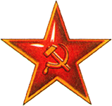

Дневник партизана

- Вторник. Выбили
немцев
с опушки. Заселили в
 доме лесника.
доме лесника.
- Среда. Мощная контратака немцев вынудила нас оставить занятые ранее позиции.
- Четверг. Под покровом ночи смогли снова засесть в доме лесника. Курим «Беломор».
- Пятница. Вернулся лесник и всех выгнал.
© бородатый анекдот